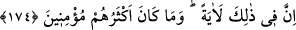
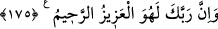

“Üzerlerine öyle bir yağmur yağdırdık ki…” yâni alt üst ve yerle bir etme vaktinde
onlardan memleketlerinin dışında ve seferde olanlara alışılmamış bir yağmur, yâni taş
yağdırdık. “Uyarılanların”uyarılıp da îman etmeyenlerin “yağmuru ne de kötü!”
174. Elbet bunda büyük bir ibret vardır; fakat çokları îman etmezler.
“Elbet bunda” yâni Lût kavmine yapılanlarda onlardan sonrakiler için “büyük bir
ibret vardır” O halde Lût kavmine inen azâbın onlara da inmemesi için onların çirkin
fiillerden kaçınsınlar “fakat çokları iman etmezler” veya iman etmediler. Lût (a.s.)’ın
iki kızı ile iki damadının dışında kimse iman etmedi.
175. Şüphesiz Rabbin, işte O, mutlak galip ve engin merhamet sahibidir.
“Şüphesiz Rabbin, işte O,” düşmanlarını kahretmede “mutlak galip ve” dostlarına
yardım etmede “engin merhamet sahibidir.” Uyarmadan ve irşad etmeden önce azab
etmez. Azâb ehline azab etmesi, sevab ehline rahmetinin kemâlinden dolayıdır. Görmez
misin kangren olmuş bir elin kesilmesi, bütün bedenin selâmetine sebeptir. Âlem cesed,
fesad ehli ise kangren olmuş el yerindedir. Salâh ehlinin râhat ve huzuru, fesad ehlinin
ortadan kaldırılmasındadır.
Mesnevî’de der ki:
Dişin çürüdü mü, o artık diş değildir
Ey usta, söküp at onu
Söküp at ki vücudun geri kalanına zarar vermesin
O senindi ama, artık ondan kurtulmalısın
İzzet ve kahrda bir fayda olmasaydı, hadler konulmazdı. ‘Hadlerin ikâmesi, bolluk
zamanından daha hayırlıdır.’ denilmiştir. İdris (a.s.) ise şöyle demiştir: “Kim otoriter
bir sultanı, âdil bir hâkimi, bilgili bir tabibi, kurulu bir çarşısı ve akan bir nehri
olmayan yerde oturursa kendisini, âilesini, malını ve çocuğunu zâyi etmiş olur.”
Akıl sâhibine gereken şehvetlerden sakınmak, âdetleri terk etmek, bütün hallerinde
lütuf ve kahr yoluyla nefsiyle mücâhede etmektir.
Ebû Dâvûd, Nikah, 46; İbn Mâce, Nikah, 29; Müsned, II, 444.